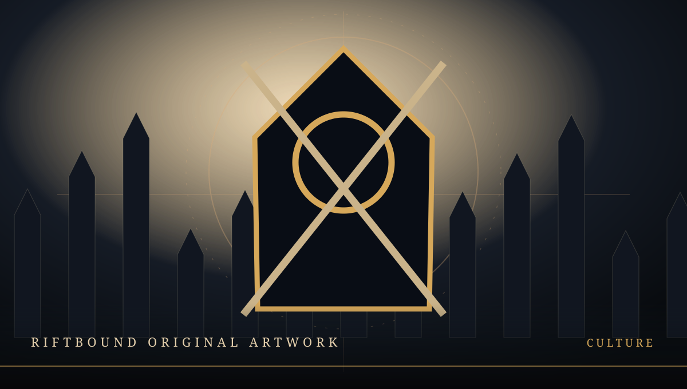

GAMING NEWS DEEPER WORLDS RICHER STORIES EVERY DAY
GAMING CULTURE
What Makes a Game Worth Your Time?
A better way to judge a game than counting features, trailers, or hours alone.
2026-10-19RIFTBOUND Editorial2 MIN READ

Beyond the marketing
A big feature list is easy to advertise. A strong experience is harder to describe. Many games promise enormous maps, hundreds of quests, and months of content. Yet a compact game that knows exactly what it wants to do can feel more satisfying than a sprawling game that never finds its rhythm.
The question of friction
Consider what happens between wanting to do something and actually doing it. Does the interface help? Are the early tutorials informative or exhausting? Does the game respect a player's time without removing every useful challenge? Good friction makes a decision meaningful; bad friction merely makes it slow.
Community is part of the game
The same world can feel entirely different with a helpful guild, a reliable co-op partner, or a hostile lobby. For online games, community tools and moderation belong in the discussion of quality just as much as combat or visual fidelity.
The lasting test
A useful review can ask what a game does well, who is likely to enjoy it, and where its design gets in its own way. No single score can answer those questions. The best game for you may be one you return to after everyone else has moved on.